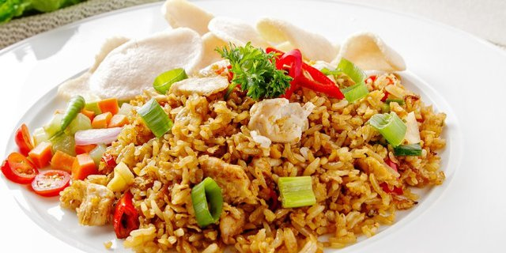
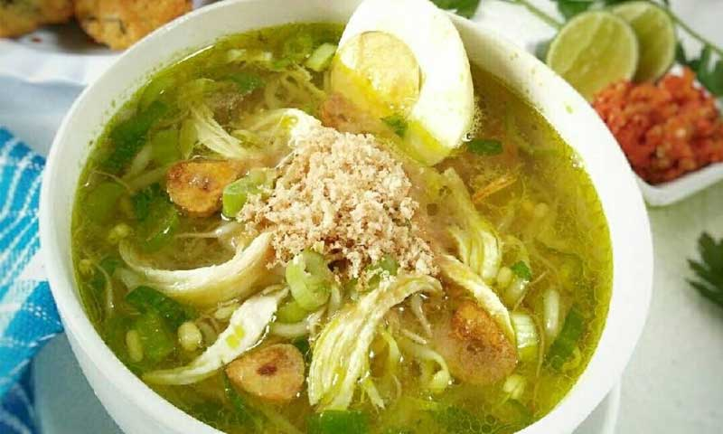

Terang bulan

Terang kudapan sejenis panekuk yang biasa dijajakan di pinggir jalan. Di Jawa Timur dan Indonesia bagian Tengah dan Timur, orang menamakannya Kue Bulan atau Terang Bulan, karena bentuknya yang bulat seperti bulan dan juga karena biasanya dijual kala malam dimana bulan muncul. Oleh karena itu, penggemar kue terang bulan dari daerah tersebut merasa bingung mengapa kue ini dinamakan "martabak" karena sama sekali berbeda dengan penganan lain yang juga bernama Martabak. Namun bagi daerah yang terbiasa menamakannya Martabak Manis, maka penganan martabak terbagi dua menjadi Martabak Manis dan Martabak Asin. Nama panganan ini bervariasi dari satu tempat ke tempat lain. Di Kota Semarang, kue ini dikenal dengan sebutan Kue Bandung. Hal ini disebabkan kue tersebut dibuat oleh orang Bangka yang menetap di Semarang, yaitu keluarga Cen, generasi ke-4 dari leluhur yang bernama Cen Khian Sam yang merupakan teman dari Hioe Kiew Sem yang memulai dahulu berjualan dan meraup kesuksesan di Bandung. Keluarga Cen ini berjualan Martabak Manis di Jalan Gajah Mada.
Nasi goreng Jawa
Nasi goreng Jawa (Jawa: ꦱꦼꦒꦒꦺꦴꦫꦺꦁꦗꦮꦶ, translit. Sěgå gorèng Jawi) adalah nasi goreng khas Jawa yang berbeda dengan nasi goreng China. Perbedaannya adalah nasi goreng China biasanya berwarna agak kuning karena dicampur kari untuk versi Kanton Singapura serta nasi goreng China RRC berwarna merah muda dengan lauk sayuran, daging babi dan udang atau nasi goreng dengan saus khusus. Nasi goreng Jawa biasanya dibumbui dengan sambal ulek, bawang, terasi, dan dan dimasak dengan kayu atau anglo. Selain itu, sering juga ditambahkan telur goreng, kerupuk, kubis dan timun
Soto Lamongan
Masyarakat Lamongan yang bermata pencaharian sebagai penjual soto ayam turut dipengaruhi oleh unsur budaya. Dalam penelitian dijelaskan, keberadaan makam keramat leluhur Dusun Kebontengah di Lamongan berpengaruh dalam pengembangan Soto Ayam Lamongan. Makam keramat tersebut adalah makam Buyut Bakal yang dipercaya sebagai sebagai cikal bakal tokoh pembuka dusun yang konon dikenal sebagai juru masak dari Sunan Giri. Keberadaan tokoh tersebut turut mempengaruhi pemilihan mata pencaharian masyarakat sebagai penjual soto. Kebiasaan untuk membuat dan berjualan soto telah diturunkan oleh warga Lamongan dari masa ke masa sehingga memperkuat identitas bahwa soto ayam kampung berasal dari Lamongan dan berkembang menjadi soto ayam Lamongan yang kini dikenal. Bahkan, Lamongan mendapat julukan sebagai Kota Soto. Saat ini, banyak penjual soto di Lamongan menggunakan gerobak khusus dengan berkeliling atau menetap di satu tempat (sistem bongkar pasang lapak).